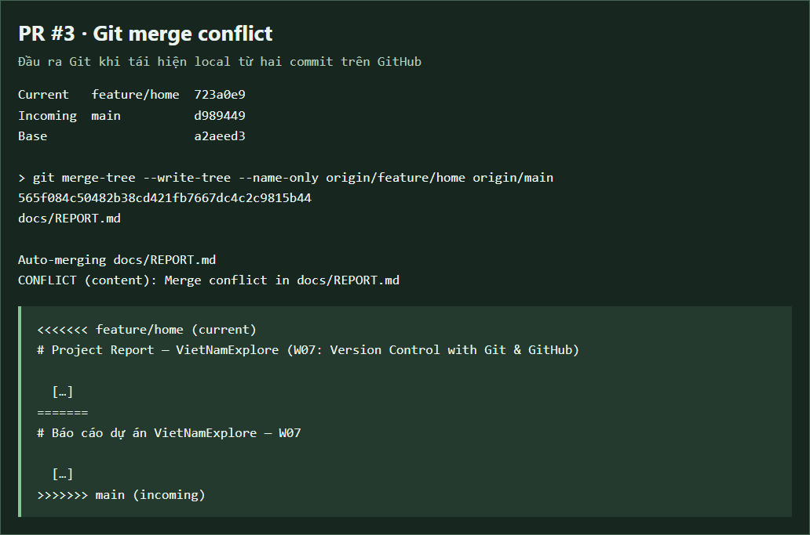

PR #8 đưa trang Ẩm thực vào main
Sáu món ăn, ba bộ lọc vùng miền và bố cục 3/2/1 cột. Xem PR đã merge.
PR #3 sửa autoplay trên trang chủ
Review ban đầu phát hiện banner tự chuyển ảnh khi focus bàn phím vẫn ở trong đó. Khanh sửa ở 723a0e9. Review lại xác nhận autoplay chỉ chạy khi cả chuột và focus rời banner.
Conflict còn ở báo cáo
Đề xuất giữ khung báo cáo trên feature/home, đưa Task 6 của Huy từ main vào và bổ sung minh chứng Task 3–4. Xem báo cáo.

